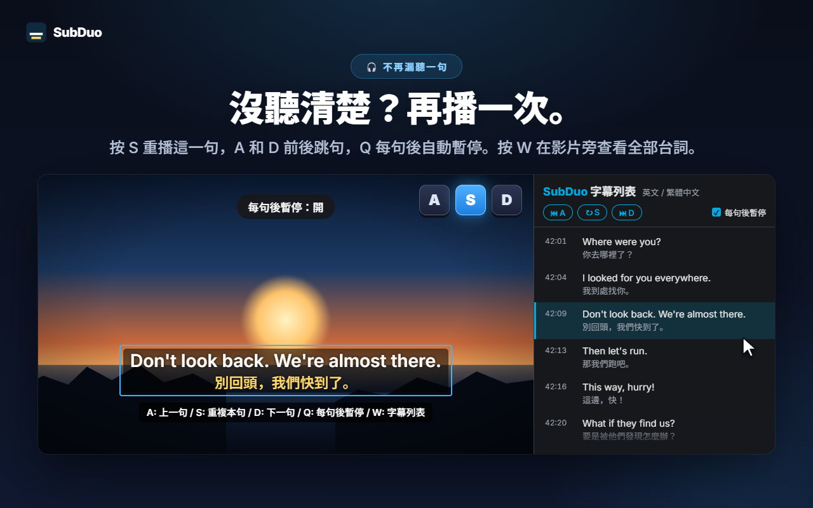
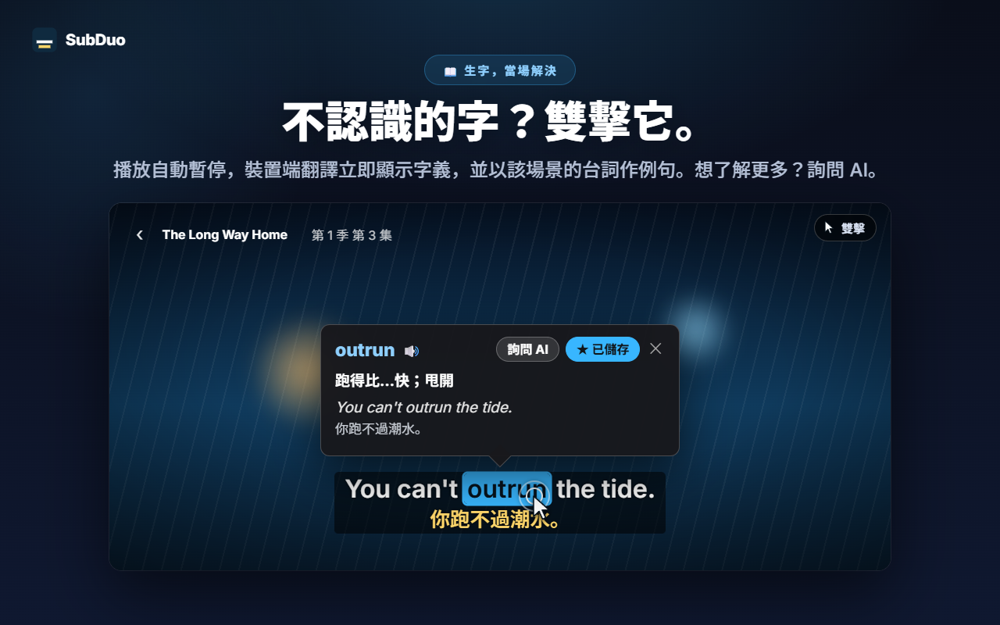
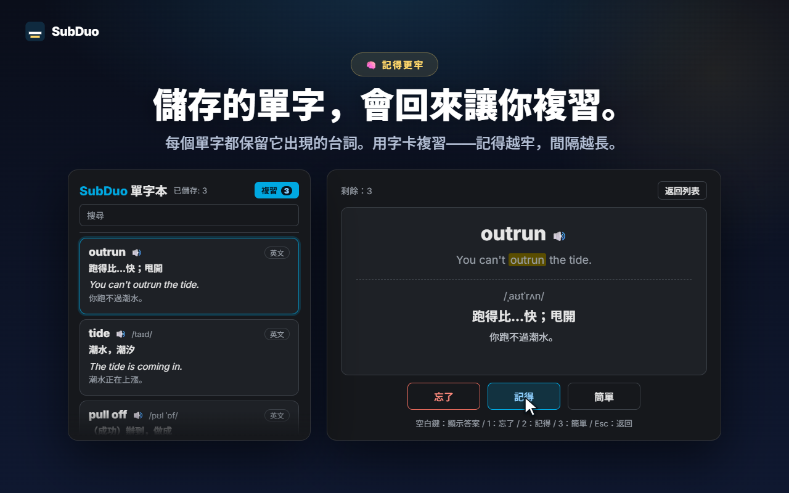

任選兩種字幕語言
影片開始播放時，自動偵測網站提供的所有字幕軌，包括 YouTube 的自動產生字幕。每行各選一種語言，也可以隱藏其中一行。
SubDuo 同時顯示兩種語言的字幕——上行原文，下行中文。雙擊單字就能查看字義，按一個鍵就能重播台詞，學到的單字還能存進內建的單字本。
使用各網站內建的字幕 · 不需帳號 · 字幕留在你的瀏覽器中
串流播放器一次只能顯示一種字幕語言。SubDuo 再加上一種，還附上從中學習的工具。
擴充功能的實際畫面，以中文呈現。
從作品提供的字幕軌中任選兩種——上行原文，下行中文。字幕可以拖曳到任何位置，在某一行上滾動滾輪即可調整大小，按右鍵可變更顏色、透明度或模糊。

按 S 重複本句，A 和 D 跳到上一句與下一句，按 Q 開啟每句後暫停。按 W 在 Chrome 側邊欄開啟字幕列表——雙語逐句對照，點選任一行即可跳到該處。

影片隨即暫停，卡片立刻顯示字義——由 Chrome 內建翻譯在你的裝置上完成，並以該場景的台詞作為例句。按住 Alt 拖曳可選取片語。按「詢問 AI」，可查看貼合語境的解釋、發音與例句。

每個儲存的單字都會保留它出現的那句台詞。在單字本中搜尋、篩選、播放發音，再用字卡複習——越熟悉的單字，隔越久才會再出現。
不需帳號，也不用設定。安裝後按下播放就好。
從 Chrome 線上應用程式商店安裝 SubDuo，然後在 Prime Video、YouTube、Netflix、Disney+ 或 TED 播放影片。
點擊 SubDuo 圖示，為上行與下行各選一種字幕語言。清單只會列出該作品提供的字幕。
雙擊單字查詢，按 A、S 或 D 重播台詞，單字本可從彈出視窗開啟。
為邊看邊學的人打造——不需要時，字幕絕不礙事。
影片開始播放時，自動偵測網站提供的所有字幕軌，包括 YouTube 的自動產生字幕。每行各選一種語言，也可以隱藏其中一行。
雙擊或按住 Alt 點選單字，或按住 Alt 拖曳選取片語。播放暫停，譯文直接顯示在影片上，翻譯在你的裝置上完成。
以你的顯示語言提供貼合語境的解釋、發音與例句。每天最多 20 次，免費。
一鍵儲存單字，可搜尋、依語言篩選，按 🔊 聽發音。字卡會把你已經記住的單字間隔得更久。
A 上一句，S 重複本句，D 下一句。Q 每句後暫停。模糊其中一行來自我測驗，再把滑鼠指向它核對答案。
所有台詞以雙語顯示在影片旁。目前的台詞會醒目標示，點選任一行即可跳過去。按 W 開啟。
拖曳移動位置，滾輪調整某一行的大小，方向鍵微調，可靠左、置中或靠右。按右鍵可逐行設定顏色、透明度與模糊。
YouTube 上字幕大一點，Netflix 上低調一點——設定依網站分別儲存，並透過你的 Chrome 同步。
選單、翻譯與 AI 解說都使用你選擇的顯示語言，可以和 Chrome 的語言不同。
SubDuo 讀取各網站已傳送到你瀏覽器的字幕檔案，並在瀏覽器中繪製。它唯一對外傳送的，是你選擇詢問 AI 的詞句，以及該詞句所在的字幕台詞。
字幕在你的瀏覽器中解析與繪製。你的設定、單字本與觀看紀錄不會傳送給開發者。單字翻譯由 Chrome 內建翻譯在你的裝置上完成。
當你按「詢問 AI」時，選取的詞句、它所在的字幕台詞與畫面上的另一行、語言代碼，以及一組隨機裝置識別碼（用於每日次數限制）會傳送到 SubDuo 伺服器，由伺服器請 OpenAI 產生解釋。為了運作服務，你的 IP 位址會被處理。
沒有任何需要註冊的東西。擴充功能不含廣告，也不含數據分析工具。
「storage」用於設定與單字本，「scripting」用於更新後重新連接已開啟的分頁，「sidePanel」用於字幕列表，此外只存取五個支援的網站。
從 Chrome 線上應用程式商店安裝，只要幾秒